| Previous | Next |
GSAC is built on the concept of instrumented stations at known locations, with unique site IDs, 4 character labels, (or with unique combinations of site IDs and site names), with antennas or sensors, and with receivers or data loggers, making science data files. Times are assigned to stations' operations and to data collections.
The GSAC Search Sites web page has entry forms to query site metadata. A "site" is a station or a geodesy "monument," with instruments at a fixed latitude-longitude-height location. You can search for sites by name, in a latitude-longitude bounding box, with dates, and with other choices, such as instrument types.
When you click on Search Sites, you see a new web page with
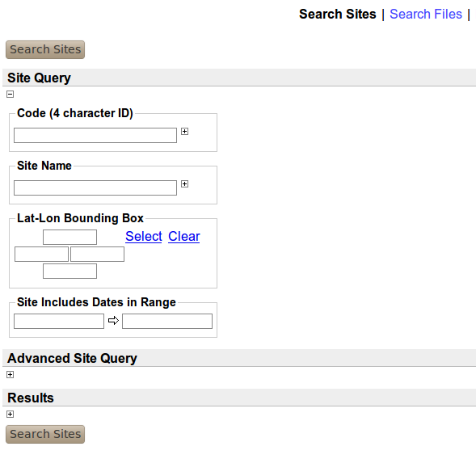
If you click on the "Search Sites" button above Site Query (not the link with the same name at the top of the page) you will search for all sites in this repository (caution, the UNAVCO, CDDDIS and SOPAC GSACs have thousands of sites). If you enter a Code (4 character ID) like KATC, or a Site Name like Katavia, you will limit the search for sites in the repository with those site values.
You can put search strings in the entry boxes, for example, for Code, hover the cursor over the Code entry box to see this help:
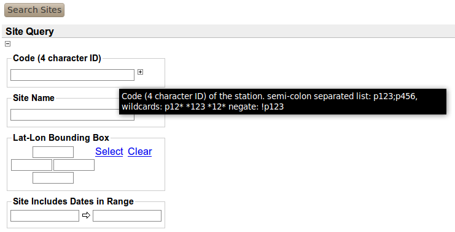showing that you can search with a list of site codes separated with ";", or search with wildcards like p2*, or exclude a site such from a search, as with !P123.
Do not include quotes "" in search items.
You can limit a site search to a geographic region with the Lat-Lon Bounding Box group of four value boxes. The top and bottom boxes are for the most northerly and most southerly latitudes. The left and right boxes are for the most westerly and most easterly longitude boxes. You can use a minus sign in the boxes. Do not enter characters in the boxes, such as W. Theses boxes are for numerical entries only.
GSAC does not use or recognize geographic positions in the troublesome and highly-error-prone formats of degrees-minutes-seconds. We admire Captain James Cook, Louis-Antoine de Bougainville, and Alessandro Malaspina, but do not use their technologies.
The station time range search ("Site Includes Dates") has this help when you do a cursor hover:
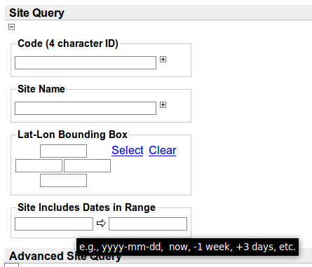
showing formats for time values. Alternately, clicking in any date entry box in GSAC shows a calendar you can use to choose date values.
The Results area for Site Search (click the [+] box under Results) shows an Output: option box with the choice of formats for GSAC site query results. Some of these are standard formats; others are made by GSAC:
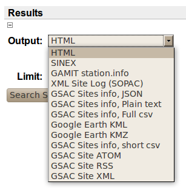
HTML
provides a
GSAC web page of the results,
which is useful for browsing a GSAC server.
HTML is the default GSAC output format.
The SINEX format for GPS results is described in the IERS SINEX Format page, http://www.iers.org/ nn_324882/IERS/EN/ Organization/AnalysisCoordinator /SinexFormat/sinex.html?__nnn=true .
The GAMIT station.info file format for GPS station data is described in the GAMIT documents page, http://www.gpsg.mit. edu/~simon/ gtgk/docs.htm.
The SOPAC XML site log format for GPS stations is described in http://sopac.ucsd.edu/projects/xml/.
JSON is a new IT format style, intended to improve on XML. It is for reading by computer processing. GSAC Sites info JSON files for sites are of course tailored to GSAC results. Some data centers get GSAC results automatically in this format.
The GSAC sites info, Plain text format for site values was created by UNAVCO for a visual human check of what is available about a station in a GSAC repository. This plain text file format is not for computer processing and UNAVCO may alter its format at any time without notification.
Comma-separated-value files (CSV) are a simple format, using ASCII or UTF-8 characters. CSV files can be read by humans, and also can be easily interpreted by computer scripts. UNAVCO uses an excellent convention for CSV, the "Standard CSV Format" for station data (see http://www.unavco.org/data/gsacws/docs/ UNAVCO_standard_CSV_format.html). This format has been perfected over several years for "point data" -- observations at fixed locations on or near the Earth. It is self-describing,, with names of data types, formats for each value, and units in some cases.
The GSAC Sites info, Full csv format has information about stations and their instruments. Each line is for one "equipment session" at one station, a time interval when the instrumentation does not change so that the instrument data files during that interval from that station are consistent.
The Google Earth KML and Google Earth KMZ results are files to show station locations and related information in Google Earth; they have the same information content.
The GSAC Sites info, short csv file format has only values for a site's 4-character ID, its name, and its latitude, longitude, and ellipsoid height. The GSAC Site XML format has similar limited information.
GSAC also provides some skeleton code giving IT formats ATOM and RSS with very little information content.
To understand the GSAC site query output formats, use a GSAC server online to make sample result files. There are also sample files in the UNAVCO GSAC web site, Documents page, as well.
Note that if a repository does not hold and supply values for the special GAMIT station.info parameters called HtCod and SwVer, then the GSAC web service there cannot, of course, supply those values in GAMIT station.info results from GSAC site searches. GSAC does not know how to supply or "correct" bad or missing data values in geodesy, or in any other domain. GSAC is not for data quality checks.
The Results area also has a Limit: box you can use to limit how many items are returned from any search. The default value, shown in the box, is 1000. In learning GSAC you do not need to see so many results.
The Advanced Site Query area for Search Sites (click the [+] box to see it) has more choices to refine site searches:
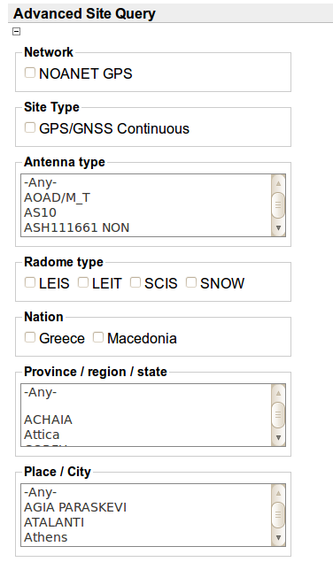
Clicking on any of these items will add a new limitation to the site search. You can for example search on some receiver type, and also add more selection items at the same time.
Let's see site search results in the web pages (HTML results). A successful site search returns a table with one or more stations. These results are from the NOANET GSAC of the National Observatory of Athens.
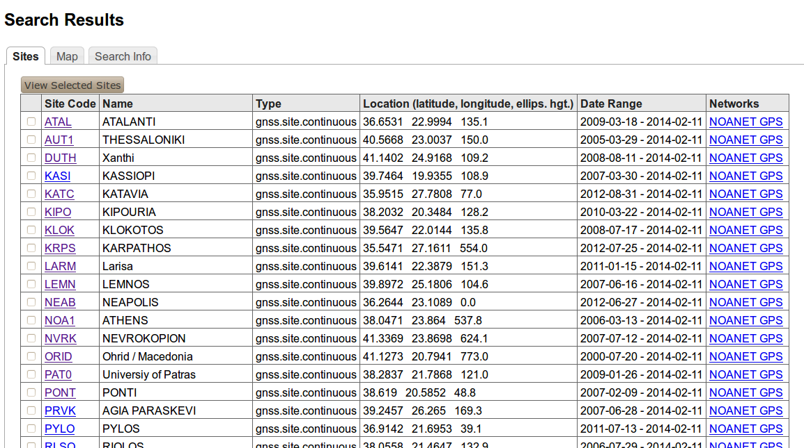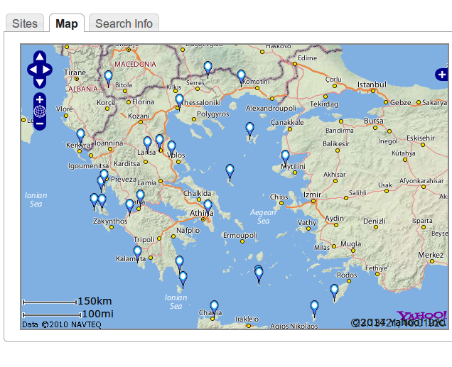
Click on the Map tab to see a map with all the stations in the table:
If you click on a station location marker on the map, you will see a pop-up box with information about that station.
Clicking on a name in the Networks column in the table makes a completely new search for all the stations in that network; not your original search. Some networks have hundreds of sites.
Click anywhere in a row in the table of search results (except a Site Code name) to see a pop-up box with information about the site, like this:
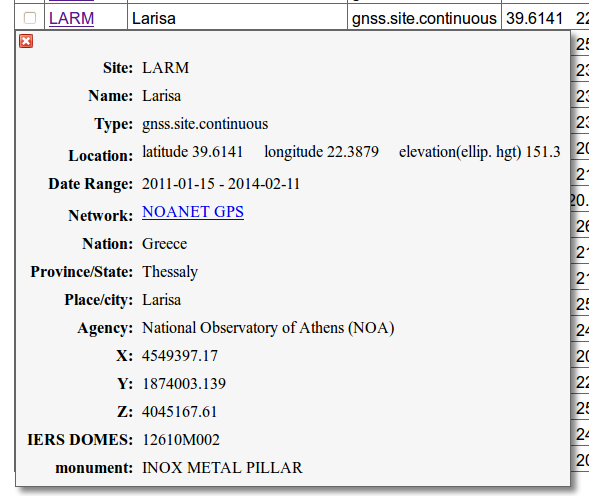
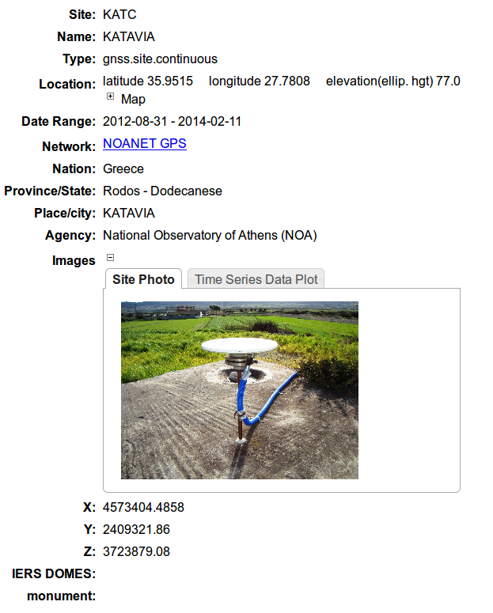Click on a Site Code name in the table of search results to see a new web page about that one station, like this:
The first view of this page shows a station location photograph, if one is available. There is a tab Time Series Data Plot with an image of time series data, is there is one:
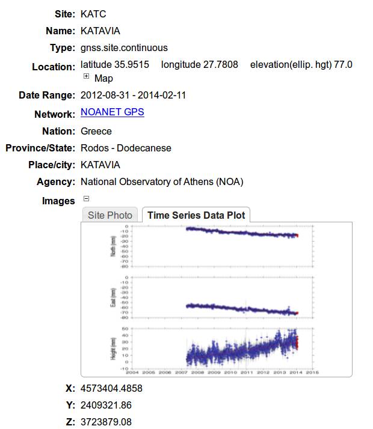
Click on [+] Map to see a map with a marker at the station location. Click on the station location marker on the map to see a popbox box with information about that station.
Note the site information has the IERS DOMES value, and the geodetic position values (x,y,z), if available.
Click on Equipment: [+] to open a list of the site's equipment sessions, time intervals when no change was made to the instrumentation at that site:
Go back to the table of site search results. If you click on the Search Info tab at the top, a list of the Results Output format appears at the bottom of a normal site search form (and your original search selections are preserved):
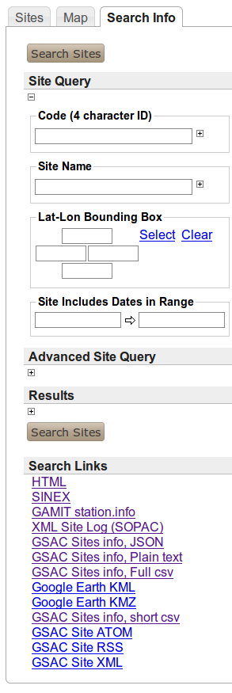
Click
on any of the Search
Links
or
Result
Output Formats
to
redo the original search, but to make a new kind of results format:
| Previous | Next |